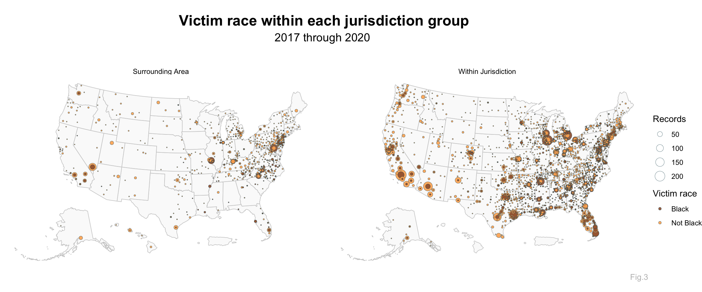

# Load libraries.
#== packages ==
library(here)
library(arrow)
library(dplyr)
library(stringr)
library(tidyr)
library(gt)
library(sf)
library(lwgeom)
library(tigris)
library(osmdata)
library(ggplot2)
library(sessioninfo)Data Exploration Analysis
Summaries, Tables, & Plots
Load the data
This script explores the analysis data that the cleaning script saved to see how complete the outcome and the six predictors are, how they’re distributed, and how they relate to each other. But first, I’ll load the packages and read in the Parquet file, homicide_modeling.parquet, which gets its name from being the same file the modeling script reads later, and the .weather_raw dataframe to check the units of the four weather measures, since the analysis data doesn’t include them. I’ll also load the helper functions and the plot theme from the utils.R file.
Summarize completeness and scope
Next, I’ll summarize the five numeric predictors, count the missing values in the outcome and all six predictors, and count the records by year and the number of states to see how complete the data is and which years and places it covers.
# Summarize the predictors, count missing values, and count records by year and state
#== summary statistics table ==
homicide_eda %>%
select(
temp_2m_avg,
relative_humidity_2m_avg,
rain_sum,
snowfall_sum,
agency_population
) %>%
# (Olumide, 2025)
pivot_longer(
cols = everything(),
names_to = "predictor",
values_to = "value"
) %>%
group_by(
predictor
) %>%
summarise(
Min = min(
value,
na.rm = TRUE
),
`1st Qu.` = quantile(
value,
0.25,
na.rm = TRUE
),
Median = median(
value,
na.rm = TRUE
),
Mean = mean(
value,
na.rm = TRUE
),
`3rd Qu.` = quantile(
value,
0.75,
na.rm = TRUE
),
Max = max(
value,
na.rm = TRUE
),
Missing = sum(
is.na(value)
)
) %>%
mutate(
# (Matt, 2020; Hadley, 2024)
group = case_when(
predictor == "agency_population" ~ "Agency",
TRUE ~ "Weather"
),
# (Matt, 2020; Hadley, 2024)
predictor = case_when(
predictor == "temp_2m_avg" ~ "Temperature (°F)",
predictor == "relative_humidity_2m_avg" ~ "Relative humidity (%)",
predictor == "rain_sum" ~ "Rainfall (inches)",
predictor == "snowfall_sum" ~ "Snowfall (inches)",
predictor == "agency_population" ~ "Agency population"
)
) %>%
arrange(
desc(group)
) %>%
# (Muldoon, 2021)
gt(
rowname_col = "predictor",
groupname_col = "group"
) %>%
fmt_number(
columns = Min:Max,
decimals = 2
) %>%
fmt_integer(
columns = Min:Max,
rows = predictor == "Agency population"
) %>%
fmt_integer(
columns = Missing
) %>%
tab_header(
title = md("**Predictor Summary Statistics**"),
subtitle = md("*2017 through 2020*")
) %>%
tab_stub_indent(
rows = everything(),
indent = 5
) %>%
opt_align_table_header(
align = "left"
) %>%
cols_align(
align = "center",
columns = everything()
)| Predictor Summary Statistics | |||||||
|---|---|---|---|---|---|---|---|
| 2017 through 2020 | |||||||
| Min | 1st Qu. | Median | Mean | 3rd Qu. | Max | Missing | |
| Weather | |||||||
| Rainfall (inches) | 0.00 | 1.21 | 2.84 | 3.27 | 4.62 | 37.21 | 0 |
| Relative humidity (%) | 17.16 | 62.47 | 70.27 | 66.76 | 75.00 | 88.73 | 0 |
| Snowfall (inches) | 0.00 | 0.00 | 0.00 | 1.74 | 0.58 | 70.08 | 0 |
| Temperature (°F) | −11.58 | 46.49 | 60.89 | 58.71 | 73.08 | 88.50 | 0 |
| Agency | |||||||
| Agency population | 0 | 98 | 392 | 2,305 | 1,760 | 49,926 | 2,897 |
#== missing vals per col ==
homicide_eda %>%
select(
victim_racial_construct,
temp_2m_avg,
relative_humidity_2m_avg,
rain_sum,
snowfall_sum,
agency_population,
jurisdiction_match
) %>%
summarise(
# (Barter, 2020)
across(
everything(),
~ sum(is.na(.x))
)
) %>%
# (Olumide, 2025)
pivot_longer(
cols = everything(),
names_to = "column",
values_to = "missing"
) %>%
# (Muldoon, 2021)
gt() %>%
tab_header(
title = md("**Missing Values per Predictor**")
)| Missing Values per Predictor | |
|---|---|
| column | missing |
| victim_racial_construct | 0 |
| temp_2m_avg | 0 |
| relative_humidity_2m_avg | 0 |
| rain_sum | 0 |
| snowfall_sum | 0 |
| agency_population | 2897 |
| jurisdiction_match | 0 |
#== records per year ==
homicide_eda %>%
count(record_year) %>%
# (Muldoon, 2021)
gt() %>%
tab_header(
title = md("**Homicide Yearly Records**"),
subtitle = md("*2017 through 2020*")
)| Homicide Yearly Records | |
|---|---|
| 2017 through 2020 | |
| record_year | n |
| 2017 | 3862 |
| 2018 | 3808 |
| 2019 | 3532 |
| 2020 | 4564 |
#== number distinct states ==
homicide_eda %>%
summarise(
states = n_distinct(state)
) %>%
# (Muldoon, 2021)
gt() %>%
tab_header(
title = md("**Total Homicide States**"),
subtitle = md("*distinct counts*")
)| Total Homicide States |
|---|
| distinct counts |
| states |
| 51 |
Only agency_population has missing values (2,897); the outcome and the other five predictors have 0. Its mean (2,305) is much higher than its median (392), and its maximum is 49,926, so a few agencies with very large values pull the mean up. Snowfall has a median of 0.000, so at least half of the records come from months with no snowfall. The records cover 51 states over 2017 through 2020, with the most records in 2020 (4,564).
Now I’ll map the county center points in two panels, one for each jurisdiction group, with each point sized by its number of records and filled by victim race, over the shifted state outlines.
# Map the county records for both jurisdiction groups in two panels.
#== two-panel map==
jurisdiction_map_plot <- ggplot() +
#== base map ==
geom_sf(
data = state_map_sf,
fill = "gray98",
color = "gray80",
size = 0.3
) +
#== data on map ==
geom_sf(
data = county_points %>%
arrange(
desc(n)
),
# (Tierney, 2025)
aes(
size = n,
fill = victim_racial_construct
),
shape = 21,
color = "#275561",
stroke = 0.2,
alpha = 0.9
) +
# (Tierney, 2025)
scale_size_area() +
scale_fill_manual(
values = c(
"Black" = "#9D5E38",
"Not Black" = "#FFB060"
),
name = "Victim race"
) +
# (Tierney, 2025)
facet_wrap(
~jurisdiction_match
) +
labs(
title = "Victim race within each jurisdiction group",
subtitle = "2017 through 2020 \n\n",
caption = "Fig.3",
size = "Records"
) +
theme_void() +
theme() +
ggplot_theme
#== display figure 3 ==
jurisdiction_map_plot
#== save figure ==
ggsave(
# (Olumide, 2025)
filename = here::here(
"output",
"figures",
"fig_3.png"
),
plot = jurisdiction_map_plot,
width = 12,
height = 5
)The Surrounding Area panel holds 2,897 records and the Within Jurisdiction panel holds 12,869, so the second map is far denser. In both panels, most circles sit eastward, with a second cluster in California and Arizona, and the largest Black circles appear in the South and in large Midwestern cities.
Conclusion
The analysis data is complete except for 2,897 missing agency population values. Since 35.7% of its victims are Black, the model must outperform the 64.3% accuracy achieved by always predicting “Not Black.” However, Black and Not Black victims differ most in agency population. The proportion of Black victims also varies by jurisdiction group (36.7% versus 31.2%) and by state (0% to 82.8%). No pair of predictors is correlated strongly enough to prevent the model from separating their effects, so the data is ready for logistic regression in the modeling script.